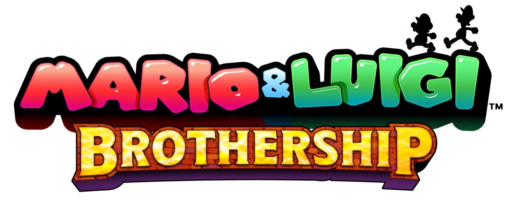

Mario & Luigi: Brothership

| Release Date: | November 7th, 2024 |
| Genre: | RPG |
| Developer: | Nintendo |
| Platform: | Nintendo Switch |
| Details: | Nintendo |
Mario & Luigi Brothership is the latest entry to the Mario & Luigi series, which is one of the Mario franchise’s RPG series.This game takes the Mario Bros to the world of Concordia, which has been split apart after the destruction of the Uni-Tree. With their new friends, they sail across the ocean to reconnect each island with the new Uni-Tree. As they travel across Concordia’s islands, they’ll use their jumps, hammers, and bro attacks in a turn-based combat system to defeat the monsters they encounter.
This has been a game I’ve had my eye on since they’ve announced it. I grew up with the original three games of this series and have fond memories of them growing up. I haven’t played any of the more recent entries to the series as I’ve heard mixed feelings about them and they didn’t catch my interest. However, the trailers for this game seemed like a return to their roots, exploring a non-traditional land and focusing on the core of the series. I went into this game with high expectations, and while I do think this is a solid game, my expectations left me wanting something more.
Gameplay
The main gameplay loop of this game reminds me a lot of the Super Mario RPG Remaster that came out last year. As you travel around the world, not only are you running into enemies to initiate combat, but traversing the world has that Mario style of platforming and solving puzzles. It freshes up the time spent between combat encounters, giving the player a more diverse experience than just combat. This is just something that Mario RPGs tend to do really well at. This game changes it up a bit by isolating the world into a collection of islands, each offering it's own sort of "experience" as you work your way towards the lighthouse link.
The game feels at its best during combat. The flow of battle is similar to other turn-based RPGs, but these Mario RPGs like to incorporate “action commands” whenever you attack. As previous games, I really like this inclusion to make these fights more interactive for the player, but the Mario and Luigi series tends to take this further with their “Bros Attack”. Normal attacks have a couple action commands present, the Bros Attacks is a series of these commands that if all done correctly can do massive damage to the enemies.They can be hard to execute correctly, as some require tight timings, memorization, or a series of correct button inputs, which all adds a layer of skill to combat that you don’t see often within a turn-based combat system.
This entry to the series introduces a new combat mechanic of battle plugs. These are temporary modifiers you can equip to augment your attacks to do more damage, protect yourself from status, automatically use items, etc. They have a limited amount of charge, so you’re limited to a certain amount of activations till they need to be removed to recharge after some amount of turns. I like how it introduces more strategies to combat and forces you to experiment with different sets of active plugs, similar to Paper Mario’s badge system. With that said, these plugs can make most fights trivial with how powerful they can be. The cooldown on them is a step in the right direction, but being able to swap out plugs for free during combat is so strong, especially when any other action uses up your turn. They just seem so strong with little drawbacks and not enough fights to balance out their strength.
Outside of combat, the game still holds up well. As you explore the land of Concordia, you'll have to do platforming and puzzle solving throughout the adventure. None of it is terribly difficult, I'd say easier than the platforming in Super Mario RPG, but is present and is required at times. Traveling the world felt good and the various solutions the brothers come up with to overcome their obstacles was both silly, but fitting for the theme of the game. I like this direction, of giving the overworld time to shine and incorporate other aspects into the game to enrich the experience beyond the combat. However, I wish they did more with it than just simple obstacles or one-time gimmicks. As the game went on, the less enthused I became about exploring and I think that is because while the overworld mechanics were present, they were shallow and each fight I'd get into got longer and longer. The game lost it's balance between fights and exploration.
I think the whole island traveling also played a role into that disconnect. As you get further into the game, various sidequests and currencies require you to revisit islands. I have no problem with backtracking for sidequests, as that gives the game a chance to delve deeper into the world, I just wish the transition between islands was more seamless. Whenever you want to go visit a different island, it's a loading screen. The loading times aren't always bad, but if your going to do sidequesting and backtracking like the game encourages, it's A LOT of loading screens.
Also, a minor thing but I did mention it before. It's so weird that they decided to make all of Luigi's button commands tied to the B button EXCEPT within his battle menu. It just feels... wrong. Not because that's how it was in past games, but literally everything else in the game he has to use B. Why couldn't his battle menu follow that as well? It tripped me a couple of times throughout the game.
Story & Worldbuilding
It's weird how so many Nintendo games are focusing their story on sending their characters to other worlds. This game is no exception, but I like the direction they're taking here. It pulls Mario and friends out of the Mushroom Kingdom and allows for new characters to take the stage. You meet a wide array of characters, many of which join you at your hub island to help you reconnect the islands. After so many games of toads and Bowser's minions, it's a great breath of fresh air. Just, while they each have their own personality, they tend to be solely that. Not many of them show other characteristics or make them feel more... complete. I mainly felt like "oh it's the scientist, bet they're going to talk about science." It felt less like you're surrounded by this large cast of characters, but surrounded by various personalities. It just wasn't as fleshed out as I would have liked for those key to the story's plot.
This kind of extends to the side quests as well. As I mentioned above, I enjoy doing side quests for the added worldbuilding they can provide, or they give a change of pace from the main story. While there was some side quests that did do some worldbuilding, it was few and far between. I still did them all, but nearing the end of the game I was dreading more would become active because they just felt like a waste of time for a number of reasons.
- They had no substance to them. Most just felt like "oh I really want some cake. Could you go to this island and fetch me some?" or "I haven't seen my friend for a while, could you go check on him? (cue fight)". They had unique dialog, but it wasn't engaging for me. Not to mention the loading times between islands did not help with some of the longer ones...
- If you were interacting with the game outside of the main quest, the rewards for the side quests felt lackluster. I was already swimming in 1-Ups so I didn't need more, with the amount of money enemies dropped I could buy Concordia's whole stock. I didn't need new gear because enemies weren't a threat when they can get wiped by my level and plug setups. There was no pull for me to work towards the side quests outside of wanting to 100% the game.
For the story, it's.. okay. I thought the beginning was well paced and setup the setting for the story nicely. Just never really seemed to build much from there. To avoid spoilers, I'll put this part hidden away, so if you don't mind discussion about plot points later in the game, feel free to click on the button.
The story started off strong with it's introduction, and you can see the world changing around you as you progress. Various people get infected with Gloom, even those on islands you've already visited. You'd get different lines from random NPCs that would notice their friend acting differently, or thank you for connecting their island so they can see their family again. As you progress through the story, the world changes around you, which I love and was very happy to see. I also really like how the story plays into the exploration of the world. The whole theme of this game is reconnecting this isolated islands and strengthening the bonds between those you encounter. You get this feeling of isolation when you travel to a new island, because there's no way to return to your hub until you connect it, and those on the island are surprised to find an outsider entering their settlement. For the setting they were going for, they incorporated it well into how the player experiences the game.
While they did that right, the actual plot points throughout the story just, weren't engaging. It starts off fine and introduces a interesting setting for Mario and Luigi to explore, but elude some of the answers far too early in the story. The first one that comes to mind is Connie's mentor. She went missing at the time of Concordia's separation and Connie is searching for clues to her whereabouts. Nearly right after Zokket's introduction, they elude a connection between the two and to nobody else, essentially giving the player the answer to one of the game's big mysteries. At least let the player think about the mystery, drop some subtle hints that only the most attentive players may pick up on. It just made me less interested in the story, and just think "go to the four lighthouses and confront Zokket and reunite them with Connie." While that's not directly how the story goes, they elude to the true antagonist early too! It would've been way more engaging if they left it at that, and just surprised Reclusa after the Zokket fight.
Now, the first two seas and their stories weren't all that bad besides Connie's mentor. The first acted like you introduction to the world and setting the scene for the story to come, and the second started to show some of the affects the antagonist was having on the world. It was during the third sea where things started to drag for me. Up to this point, each island was unique and offered an unique experience on it. Here, we start getting some islands repeating themes and start to drag on. After completing the islands, a couple amongst your team of companions decide to get married. Which that's great for them, but turns into a fetch quest for you to gather some arrangements for the wedding. Looking back on it, it makes more sense as your seeing your hard work reconnecting these islands connecting the people of the land again, forming some of the strongest bonds. At the time however, it was so annoying to essentially get a fetch quest forced into the main story, to return to the hot & cold islands yet again. Then moving into the fourth sea, you're attacked by Bowser and lose some island's connections from his attack! While a nice touch in that the connections we made aren't totally stable, the entire sea is solely reconnecting these islands... Only one new island to connect, the rest is revisiting areas you've been to, like the hot & cold island!
By this point, I've lost a lot of the drive to continue playing. The story had no driving force behind it to keep me engaged in what will happen next, the game was forcing me to backtrack to these islands that they've already encouraged me to revisit through their side quests and collectables. Even with the birth of Reclusa I just wasn't feeling it. They were making him out as this world-ending foe that destroys world through isolation, but I never perceived him as that. Their personality did not match the vision other characters portrayed onto them. I thought it was clever of them to place a trap for Mario and Luigi to get stuck into their own "personal reality", but Reclusa just let them go? If you're this world ending being who hates connections and can trap people in their own realities, why let them go if they don't like the reality you put them in? Why do they care? It seemed counterintuitive for a being born of solitude...
Visuals & Audio
Here I have no problems. I think they transitioned to a 3D space well and maintained the Mario & Luigi feeling through its presentation. It's a pretty game, and really put care into the expressiveness of Mario and Luigi, a key component of this series. Listening to the music at the beginning of the game was such a groove, I remember grooving to the battle theme when I first heard it. The boss themes aren't as memorable, but still good listens. Beyond that though, none of the later tracks really stood out to me, but that might of been just how drained I was about the game. I do wish that they added variations of the main battle theme, because while it's a jam, you hear it A LOT during this game. I praised the TTYD Remaster for their inclusion of changing the battle theme each chapter, and I really wished they did that here to freshen up the music and have it tie into the world around you.
Overall Thoughts
I don't think this is a bad game, I like the direction their taking this series after the past couple rocky games. I think it's an improvement to those, but still has a lot of flaws in my opinion. The series means a lot to me as I have such fond memories of the original three games, but this left me questioning whether I'm blinded by nostalgia for this series. I've talked with my fiancee about my complex thoughts about this game, and it dawned on me that what was missing was risk and reward. The story felt far too safe, like each conflict that arose was simply solved by the mere presence of Mario and Luigi. Big bad finally shows up? Don't worry, Mario and Luigi got you covered! The fights felt so impactful early on because I didn't have all my tools yet, enemies were actual threats. By the end of the second sea, battles devolved into just road blocks. Either I could spend time fighting them for coins and experience I have too much of, or I can just run for free. Running away has no repercussions...
Games are supposed to be engaging media, by introducing interesting mechanics to engage your brain, make you think, strategize, practice, plan, etc. They can be a medium to tell an interactive story that's impossible to tell otherwise, to insert the player into the story, have them interact with the characters and learn about them, care about them, and wonder where you'll all go next. This game has some of those aspects there, but it wasn't enough for me. It started out great and fun, but never challenged me, never left me on a cliffhanger, never felt like I had to take a risk, so I never felt rewarded as the game went on. I want to like the game, but I'd find it hard to recommend it to someone looking to experience a game, but rather looking for something to do (honestly, it'd make a pretty good plane game I think). While it won't be soon, I really want to play Superstar Saga now and see if these feelings exist within that game as well. For if it is, then it's not the series fault, but rather my expectations for what this game brings to the table.